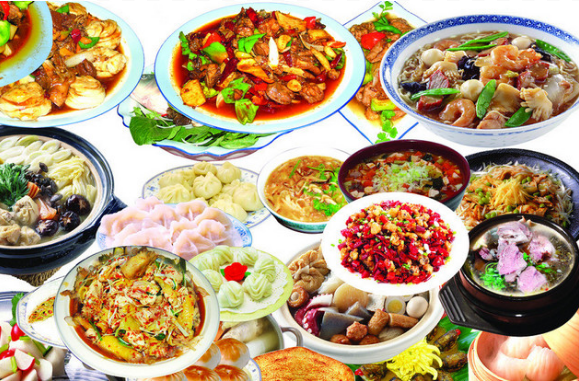
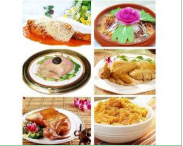

发表评论 |
社交账号登录：
   |
| 请登录或者注册后进行评论 |
美食简介：美食，顾名思义就是美味的食物，贵的有山珍海味，便宜的有街边小吃。但是不是所有人对美食的标准都是一样的，其实美食是不分贵贱的，只要是自己喜欢的，就可以称之为美食。吃前有期待、吃后有回味的东西。美食遭遇心情的时候，美食已不仅仅是简单的味觉感受，更是一种精神享受。 也是一种场合。场合好吃起来也有味道、人人都想吃上自己喜欢的。世界各地美食文化博大精深 ，营养物质各不相同，品味更多美食，享受更多健康。 |
美味说明1、味美的食物。《墨子·辞过》："今则不然，厚作敛于百姓，以为美食、刍豢、蒸炙、鱼鳖。" 2、吃味美的食物。《韩非子·六反》："今家人之治产也，相忍以饥寒，相强以劳苦，虽犯军旅之难，饥馑之患，温衣美食者必是家也。"《晋书·傅咸传》："奢不见诘，转相高尚。昔毛玠为吏部尚书，时无敢好衣美食者。" 3、美食新解，吃了使人美丽健康的食物。 4、美食是人们必不可少的，特别是对于美食家们来说。 美食之为美，全在乎于食。 或不至于追求于材质，工艺，制作…… 只在一"食"， 食者的状态，食者的心情，食者的习惯…… 终日大鱼大肉，即使真的给你做出了龙肝凤脑， 到了口中也不过是让你滤滤油水罢了，实属浪费。 不为果腹而食，用心去品，去尝，去感悟…… 白菜疙瘩汤不也被朱元璋奉为了"珍珠翡翠白玉汤"了？ 美食可以让人们以最简单的方式感受幸福的感觉,体味美食 的一瞬间,可以净化你的心灵,忘记苦恼与不开心,忘记喧嚣社会中的复杂,美食给你一种最简。 |
|||||||||
 中国美食分类
|
||||||||||